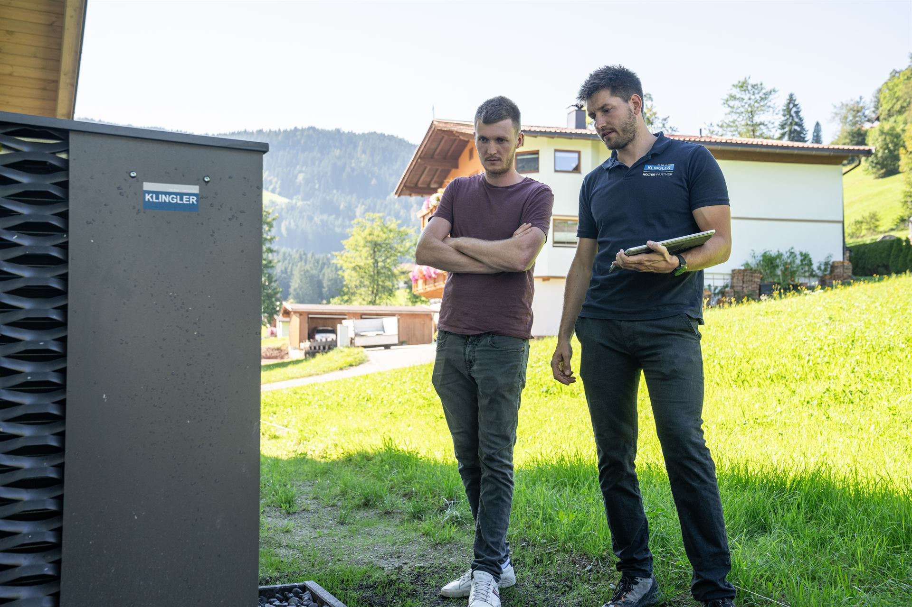

Wärmepumpe
Nutzt die Wärme aus Luft, Erdreich oder Grundwasser – ohne Verbrennung vor Ort.
- Ideal mit Fußbodenheizung oder großen Heizkörpern
- Kombinierbar mit Photovoltaik
- Wir sind zertifizierter Wärmepumpen-Installateur

Start › Heizung & Wärmepumpe
Heizungstausch & NeubauWir beraten ehrlich, welches System bei Ihnen sinnvoll ist, planen es sauber und bauen es ein. Vom ersten Gespräch bis zur Einregulierung.
Es gibt nicht die eine richtige Heizung. Entscheidend sind Ihr Haus, Ihr Verbrauch und Ihre Pläne – darauf richten wir die Beratung aus.
Nutzt die Wärme aus Luft, Erdreich oder Grundwasser – ohne Verbrennung vor Ort.
Heizen mit Holz aus der Region – eine Option, wenn hohe Vorlauftemperaturen gebraucht werden.
Zwei Wärmeerzeuger, die sich ergänzen – z. B. Wärmepumpe mit bestehendem Kessel für die kältesten Tage.
Gleichmäßige Wärme bei niedriger Vorlauftemperatur – die ideale Partnerin der Wärmepumpe.
Warmwasser von der Sonne oder eigener Strom für die Wärmepumpe.
Vier Fragen für eine erste Einschätzung – ohne Kontaktdaten.
Bund und Land Tirol fördern den Umstieg von fossilen Heizungen auf erneuerbare Systeme. Höhe und Bedingungen ändern sich regelmäßig – deshalb nennen wir hier bewusst keine Beträge, sondern verweisen auf die offiziellen Stellen.
Wir unterstützen Sie beim Förderantrag und erstellen die nötigen Unterlagen.
Wichtig: Bei vielen Förderungen muss der Antrag vor der Beauftragung gestellt bzw. registriert werden. Fragen Sie uns frühzeitig.
[Hinweis „vor Beauftragung“ mit aktuellen Förderrichtlinien prüfen]
Online in 2 Minuten oder per Telefon.
Wir sehen uns Haus und Heizung an und berechnen die Heizlast.
Mit ehrlicher Systemempfehlung – den Förderantrag bereiten wir gemeinsam vor.
Ausbau des alten Kessels, Einbau der neuen Anlage – in der Regel rund 8 Tage.
Wir stellen die Anlage optimal ein und bleiben für Service und Wartung da.
Oft ja. Entscheidend ist, mit welcher Vorlauftemperatur das Haus warm wird. Mit großen Heizkörpern, Flächenheizung oder nach einer Teilsanierung arbeiten Wärmepumpen auch im Altbau gut. Ob es bei Ihnen passt, prüfen wir bei der Besichtigung – eine erste Einschätzung gibt der Wärmepumpen-Check.
Moderne Geräte sind deutlich leiser als frühere Generationen. Wichtig ist der richtige Aufstellort, auch mit Blick auf die Nachbarn – den planen wir mit Ihnen.
Ein Heizungstausch beginnt bei ca. € 15.000. Der genaue Preis hängt von System, Gebäude und Leistung ab – und Förderungen senken die Kosten oft deutlich. Nach der Besichtigung erhalten Sie ein transparentes Angebot.
Der Tausch selbst dauert in der Regel rund 8 Tage. Wir planen so, dass Sie möglichst kurz ohne Heizung und Warmwasser sind.
Wir. Wir organisieren die Entsorgung des alten Öltanks und stimmen uns mit dem Rauchfangkehrer ab – Sie müssen sich um nichts kümmern.
Ja, Bund und Land Tirol fördern den Umstieg auf erneuerbare Heizsysteme. Aktuelle Bedingungen finden Sie oben im Abschnitt Förderung.
Ja. KLINGLER ist zertifizierter Wärmepumpen-Installateur. Wir planen, montieren und regulieren Ihre Wärmepumpe ein – und sind danach auch für Wartung und Service da.
Ja. Bei der Besichtigung berechnen wir die Heizlast Ihres Hauses. Sie ist die Grundlage dafür, dass die neue Heizung richtig dimensioniert ist – nicht zu klein und nicht unnötig groß.
Ja. Wir unterstützen Sie beim Förderantrag und erstellen die nötigen Unterlagen. Wichtig: Bei vielen Förderungen muss der Antrag vor der Beauftragung gestellt werden – sprechen Sie uns daher frühzeitig an.
Fünf kurze Fragen, zwei Minuten – Ihr Heizungsberater meldet sich persönlich.